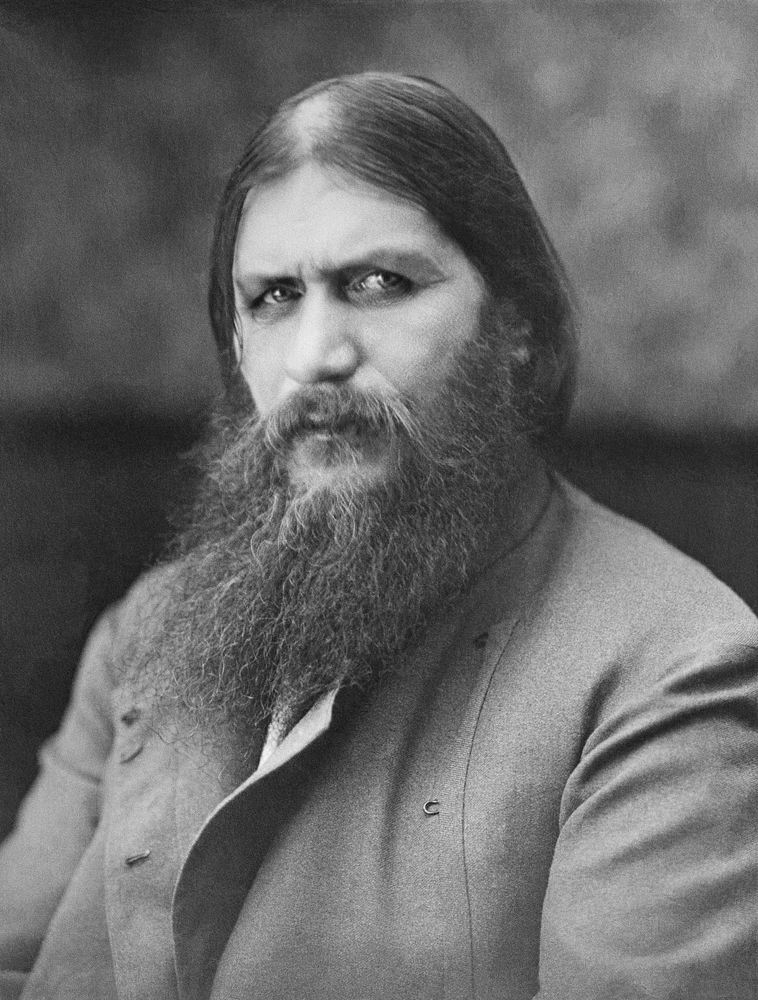

Grigori Rasputin was born into a peasant family in Siberia. In his youth people suspected him of having supernatural powers precisely the ability to heal.
Google Maps
In his early adult life he began traveling all over Russia. With these travels came power, betrayal, corruption and many more obstacles.
With all the power came enemies and Rasputin was killed and betrayed by one of his own followers. But not before putting up one hell of a fight.